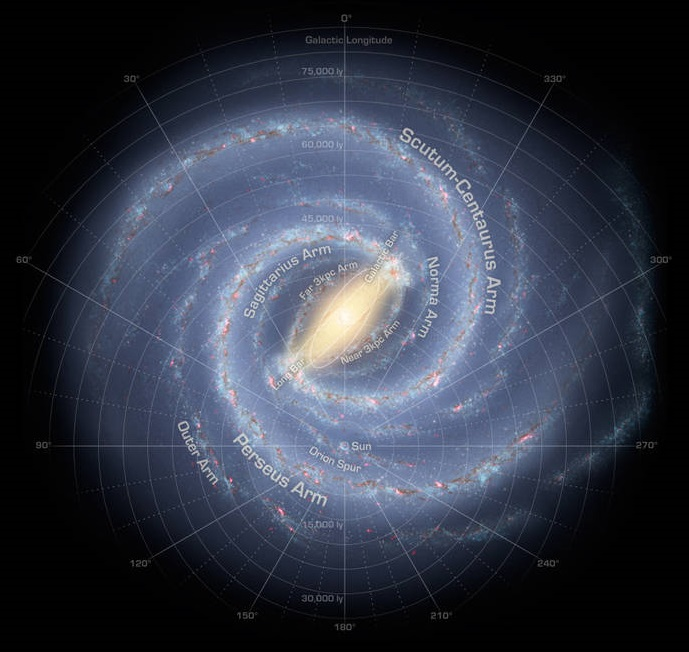
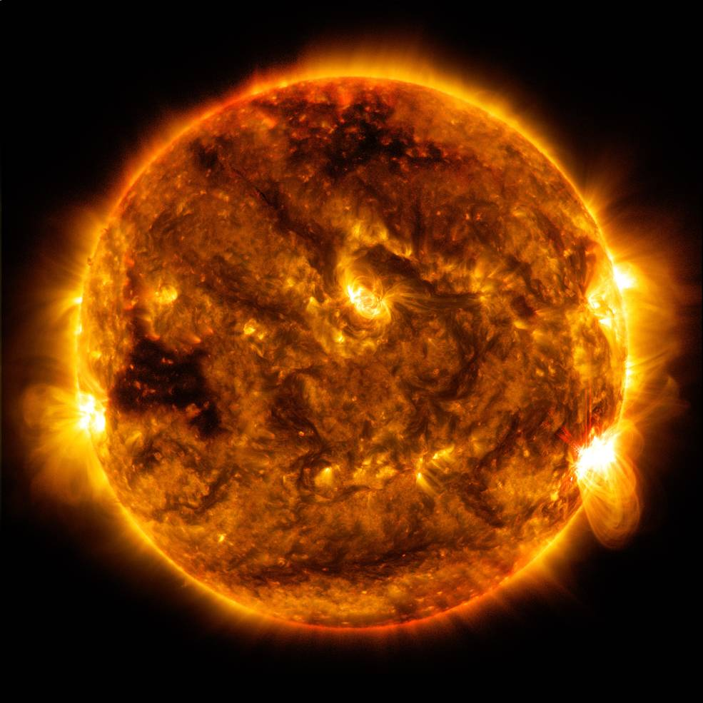
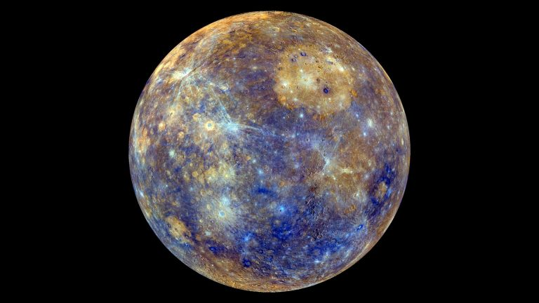
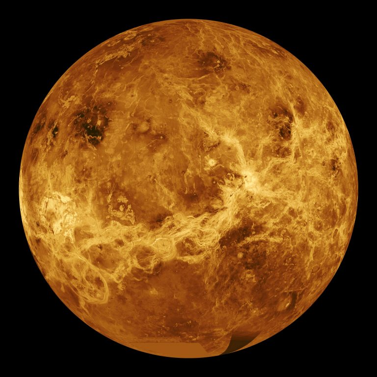
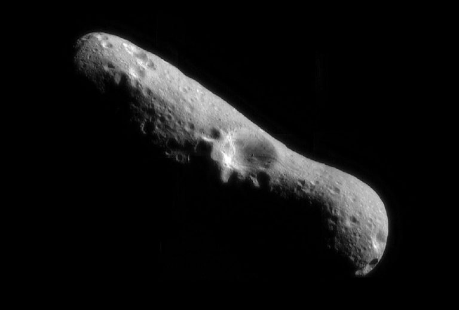
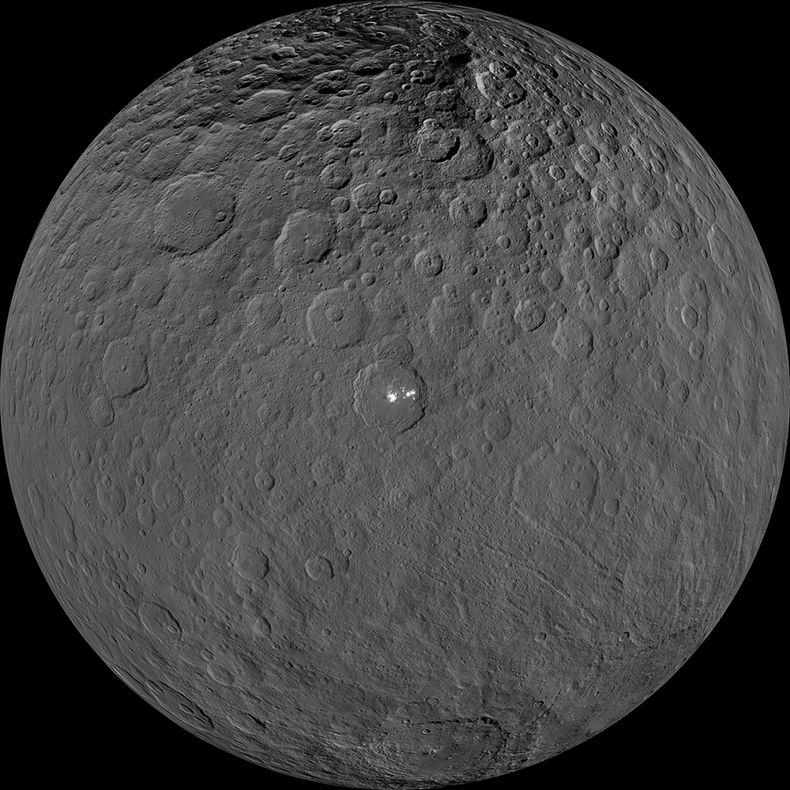
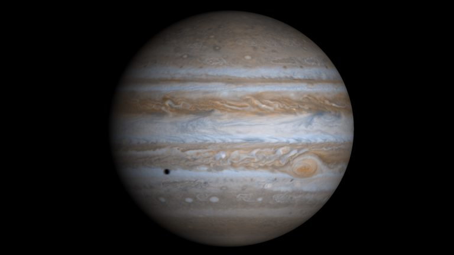
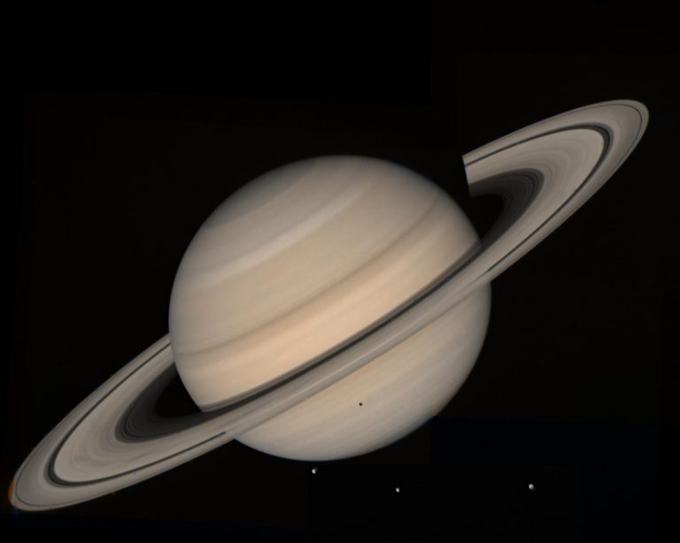
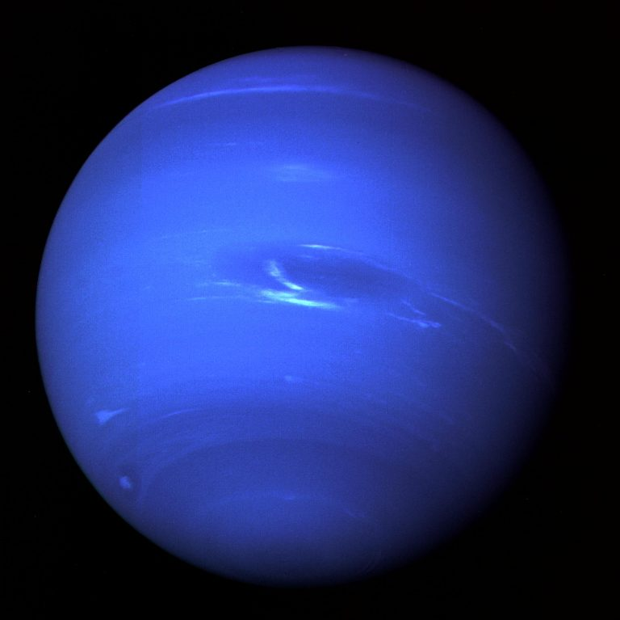
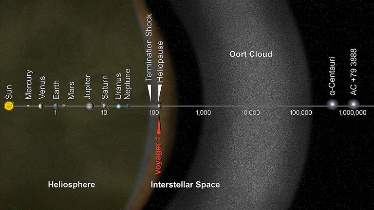

Sistema Solar
O sistema solar consiste em uma estrela, para nós denominada de Sol, na qual todos os objetos viajam ao seu
redor, sendo esses objetos os planetas, os satélites
naturais, os asteroides, os meteoroides e os cometas. Como as estrelas que há em nossa Galáxia, e nas demais
também, são Sóis, algumas muito semelhantes como a nossa
estrela, há probabilidade de existir outros sistemas parecidos como o nosso.

O sistema solar está situado em um braço espiral externo da nossa Galáxia, denominada Via-Láctea (Caminho de
Leite).
O termo planeta vem de errante, ou seja, aquele que não tem morada fixa, nômade.
- Sol
- Planeta Mercúrio
- Planeta Venus
- Planeta Terra
- Planeta Marte
- Cinturão de asteroides
- Asteroides
- Planeta Anão Ceres
- Planeta Júpiter
- Planeta Saturno
- Planeta Urano
- Planeta Netuno
- Cinturão de Kuiper
- Planeta Anão Plutão
- Planeta Anão Eris
- Planeta Anão Makemake
- Planeta Anão Haumea
- Meteoros e meteoritos
- Nuvem de Oort
Sol

O Sol é uma estrela anã amarela que se encontra no centro do sistema solar, e em um braço externo de nossa
Galáxia, a Via Láctea. Sua massa constitui à 99,8% da massa do sistema solar. É uma bola de gás mantida unida
por sua própria gravidade.
- Idade média: ~4.5 bilhões de anos(~4.500.000.000);
- Tipo da estrela: Anã branca;
- Distancia do centro da Galaxia: 26.000 anos luz;
- Rotação: ~25dias no equador e ~35nos polos;
- Composição: 92,1% de hidrogênio e 7,8% de hélio;
- Temperatura no núcleo: ~15 milhões de graus Célsius (~15.000.000°C);
Planeta Mercúrio

- É um planeta rochoso, sendo o mais próximo do Sol e o menor do sistema solar;
- Distância do Sol: ~ 58 milhões de km (58.000.000 de km), que corresponde a 0,39UA;
- Diâmetro do planeta: ~4,879 km;
- Duração do dia: 59 dias terrestres;
- Duração do ano: 88 dias terrestres;
- Atmosfera: composta principalmente de oxigênio (O2), sódio (Na), hidrogênio (H2), hélio (He) e potássio (K);
- Gravidade: ~3,7 m/s²;
- Temperatura: diurnas até 430°C, noturnas até -180°C;
- Satélites naturais: não possui;
- Anéis: não possui.
Planeta Vênus

- É um planeta rochoso, sendo o segundo mais próximo do Sol;
- Distância do Sol: ~ 108 milhões de km (108.000.000 de km), que corresponde a 0,72UA;
- Diâmetro do planeta: ~12.104 km;
- Duração do dia: 243 dias terrestres, pois o movimento de rotação do planeta é o oposto o da Terra, fazendo
Sol nascer a oeste e se por a leste do planeta;
- Duração do ano: 225 dias terrestres;
- Atmosfera: dióxido de carbono;
- Gravidade: ~8,87 m/s²;
- Temperatura: ~465°C na superfície;
- Satélites naturais: não possui;
- Anéis: não possui.
Planeta Terra

- É um planeta rochoso, sendo o terceiro mais próximo do Sol;
- Distância do Sol: ~ 150 milhões de km (150.000.000 de km), que corresponde a 1,00 UA;
- Diâmetro do planeta: ~12,742 km;
- Duração do dia: 24 horas;
- Duração do ano: 365 dias;
- Atmosfera: 21% de oxigênio (O2), 78% de nitrogênio (N), e 1% de outros gases;
- Gravidade: ~9,8 m/s²;
- Temperatura: média de 14°C;
- Satélites naturais: A Lua;
- Anéis: não possui.
Planeta Marte

- É um planeta rochoso, sendo o quarto mais próximo do Sol;
- Distância do Sol: ~ 227 milhões de km (227.940.000 km), que corresponde a 1,52UA;
- Diâmetro do planeta: ~6,779 km;
- Duração do dia: ~24 horas terrestres;
- Duração do ano: 687 dias terrestres;
- Atmosfera: composta principalmente de dióxido de carbono (CO2), argônio (Ar), nitrogênio (N2), oxigênio (O2)
em pequena quantidade e vapor de água;
- Gravidade: ~3,7 m/s²;
- Temperatura:máxima de 20°C e mínima de -140°C;
- Satélites naturais: 2, sendo Fobos e Deimos;
- Anéis: não possui.
Cinturão de asteroides
O cinturão de asteroides é uma região do Sistema Solar compreendida entre as órbitas dos Planetas Marte e
Júpiter, onde abriga vários objetos denominados de
asteroides. O cinturão segue uma órbita ao redor do Sol, assim como os planetas, no mesmo sentido. O período de
translação fica entre 3 e 6 anos terrestres.
Asteroides

Os asteroides são objetos astronômicos rochosos que orbitam o Sol. Esses objetos não possuem uma atmosfera e são
muito pequenos, por isso não denominados de
planetas. Dezenas de milhares desses objetos se encontram no cinturão de asteroides, um vasto anel em forma de
rosca que se encontra entre as órbitas dos planetas Marte
e Júpiter. Assim como os planetas, os asteroides também transladam ao redor do Sol. Um objeto maior, tal como um
planeta, pode puxar um asteroide para fora de sua órbita
pela atração gravitacional, tornando-se um satélite natural de tal objeto.
Planeta Anão Ceres

O planeta anão Ceres é o maior objeto astronômico no Cinturão de Asteroides, tendo 25% da massa total do Cinturão
de Asteroides, e está situado entre as órbitas
dos planetas Marte e Júpiter, sendo o único planeta anão localizado no sistema solar interior. O nome Ceres vem
da deusa romana do milho e das colheitas. A palavra cereal
vem do mesmo nome.
Planeta Júpiter

- É um planeta gasoso, sendo o quinto mais próximo do Sol, e o maior do sistema solar;
- Distância do Sol: ~ 778 milhões de km (778.000.000 de km), que corresponde a 5,2UA;
- Diâmetro do planeta:~170,000 km;
- Duração do dia: 10 horas terrestres;
- Duração do ano: 4.333 dias terrestres (aproximadamente 12 anos terrestres);
- Atmosfera: composta principalmente de hidrogênio (H2) e hélio (He);
- Gravidade: ~24,8 m/s²;
- Temperatura:-110°C°C;
- Satélites naturais: 79;
- Anéis: possui.
Planeta Saturno

- É um planeta gigante gasoso, sendo o sexto mais próximo do Sol, e o segundo maior do sistema solar;
- Distância do Sol: ~ 1.4 bilhões de km (1.400.000.000 de km), que corresponde a 9,5UA;
- Diâmetro do planeta:~116,000 km;
- Duração do dia: 10,7 horas terrestres;
- Duração do ano: aproximadamente 29 anos terrestres;
- Atmosfera: composta principalmente de hidrogênio (H2) e hélio (He);
- Gravidade: ~10,4 m/s²;;
- Temperatura:-110°C°C;
- Satélites naturais: 62;
- Anéis: possui.
Planeta Urano

- É um planeta gigante de gelo, sendo o sétimo do sistema solar. Assim como Vênus, o sentido de rotação é de
leste para oeste;
- Distância do Sol: ~ 2.9 bilhões de km (2.900.000.000 de km), que corresponde a 19,1UA;
- Diâmetro do planeta: ~50,724 km;
- Duração do dia: 17 horas terrestres;
- Duração do ano: 30.687 dias terrestres (aproximadamente 84 anos terrestres);
- Atmosfera: composta principalmente de molécula de hidrogênio e hélio atômico, com uma pequena quantidade de
metano;
- Gravidade: ~8,9 m/s²;
- Temperatura: mínima de -224°C;
- Satélites naturais: 27;
- Anéis: possui 13 anéis.
Planeta Netuno

- É um planeta gigante de gelo, sendo o mais distante do sistema solar;
- Distância do Sol: ~ 4.5 bilhões de km (4.500.000.000 de km), que corresponde a 30UA;
- Diâmetro do planeta: ~49.244 km (aproximadamente 4 planetas Terra);
- Duração do dia: 16 horas terrestres;
- Duração do ano: aproximadamente 165 anos terrestres;
- Atmosfera: composta principalmente de molécula de hidrogênio, hélio atômico e metano;
- Gravidade: ~11,1 m/s²;
- Temperatura: média de -210°C;
- Satélites naturais: 13;
- Anéis: possui 6 anéis conhecidos.
Nuvem de Oort
Acredita-se que a Nuvem de Oort seja uma nuvem em formato de espera localizada muito além do Cinturão de Kuiper.
A Nuvem Oort ocupa um espaço a uma distância
entre 5 e 100.000 UA. A parte externa da Nuvem de Oort defini o limite cosmológico do nosso sistema solar,
juntamente com a influência gravitacional de nossa estrela Sol.
Ela é composta de cometas que nunca se aproximaram do Sol.

Dados obtidos do site da NASA https://solarsystem.nasa.gov/